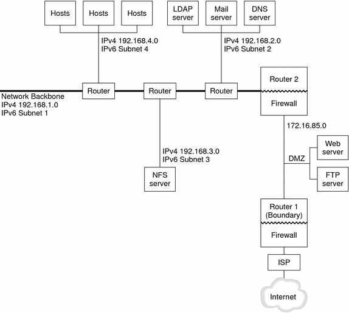

Previous
Previous
Planning an IPv6 Network (Tasks)
Deploying IPv6 on a new network or an existing network requires a major planning effort. This chapter contains the planning tasks that are necessary before you can configure IPv6 at your site. For existing networks, IPv6 deployment should be phased in gradually. The topics in this chapter help you phase in IPv6 onto an otherwise IPv4-only network.
The following topics are discussed in this chapter:
For an introduction to IPv6 concepts, refer to Chapter 3, Planning an IPv6 Addressing Scheme (Overview). For detailed information, refer to Chapter 11, IPv6 in Depth (Reference).
IPv6 Planning (Task Maps)
Complete the tasks in the next task map in sequential order to accomplish the planning tasks necessary for IPv6 deployment.
Task | Description | For Instructions |
|---|---|---|
1. Prepare your hardware to support IPv6. | Ensure that your hardware can be upgraded to IPv6. | |
2. Get an ISP that supports IPv6. | Ensure that your current ISP supports IPv6. Otherwise, find an ISP who can support IPv6. You can use two ISPs, one ISP for IPv6 and one for ISP IPv4 communications. |
|
3. Ensure that your applications are IPv6 ready. | Verify that your applications can run in an IPv6 environment. | |
4. Get a site prefix. | Obtain a 48-bit site prefix for your site from your ISP or from the nearest RIR. | |
5. Create a subnet addressing plan. | You need to plan the overall IPv6 network topology and addressing scheme before you can configure IPv6 on the various nodes in your network. | |
6. Design a plan for tunnel usage. | Determine which routers should run tunnels to other subnets or external networks. | |
7. Create an addressing plan for entities on the network. | Your plan for addressing servers, routers, and hosts should be in place before IPv6 configuration. | |
8. Develop an IPv6 security policy. | Investigate IP Filter, IP security architecture (IPsec), Internet Key Exchange (IKE), and other Solaris security features as you develop an IPv6 security policy. | |
9. (Optional) Set up a DMZ. | For security purposes, you need an addressing plan for the DMZ and its entities before you configure IPv6. | |
10. Enable the nodes to support IPv6. | Configure IPv6 on all routers and hosts. | |
11. Turn on network services. | Make sure that existing servers can support IPv6. | |
12. Update name servers for IPv6 support. | Make sure that DNS, NIS, and LDAP servers are updated with the new IPv6 addresses. |
IPv6 Network Topology Scenario
The tasks throughout this chapter explain how to plan for IPv6 services on a typical enterprise network. The following figure shows the network that is referred to throughout the chapter. Your proposed IPv6 network might include some or all of the network links that are illustrated in this figure.
Figure 4-1 IPv6 Network Topology Scenario
The enterprise network scenario consists of five subnets with existing IPv4 addresses. The links of the network correspond directly to the administrative subnets. The four internal networks are shown with RFC 1918-style private IPv4 addresses, which is a common solution for the lack of IPv4 addresses. The addressing scheme of these internal networks follows:
Subnet 1 is the internal network backbone 192.168.1.
Subnet 2 is the internal network 192.168.2, with LDAP, sendmail, and DNS servers.
Subnet 3 is the internal network 192.168.3, with the enterprise's NFS servers.
Subnet 4 is the internal network 192.168.4, which contains hosts for the enterprise's employees.
The external, public network 172.16.85 functions as the corporation's DMZ. This network contains web servers, anonymous FTP servers, and other resources that the enterprise offers to the outside world. Router 2 runs a firewall and separates public network 172.16.85 from the internal backbone. On the other end of the DMZ, Router 1 runs a firewall and serves as the enterprise's boundary server.
In Figure 4-1, the public DMZ has the RFC 1918 private address 172.16.85. In the real world, the public DMZ must have a registered IPv4 address. Most IPv4 sites use a combination of public addresses and RFC 1918 private addresses. However, when you introduce IPv6, the concept of public addresses and private addresses changes. Because IPv6 has a much larger address space, you use public IPv6 addresses on both private networks and public networks.
Preparing the Existing Network to Support IPv6
Note - The Solaris dual protocol stack supports concurrent IPv4 and IPv6 operations. You can successfully run IPv4-related operations during and after deployment of IPv6 on your network.
IPv6 introduces additional features to an existing network. Therefore, when you first deploy IPv6, you must ensure that you do not disrupt any operations that are working with IPv4. The subjects covered in this section describe how to introduce IPv6 to an existing network in a step-by-step fashion.
Preparing the Network Topology for IPv6 Support
The first step in IPv6 deployment is to assess which existing entities on your network can support IPv6. In most cases, the network topology-wires, routers, and hosts-can remain unchanged as you implement IPv6. However, you might have to prepare existing hardware and applications for IPv6 before actually configuring IPv6 addresses on network interfaces.
Verify which hardware on your network can be upgraded to IPv6. For example, check the manufacturers' documentation for IPv6 readiness regarding the following classes of hardware:
Routers
Firewalls
Servers
Switches
Note - All procedures in the this Part assume that your equipment, particularly routers, can be upgraded to IPv6.
Some router models cannot be upgraded to IPv6. For more information and a workaround, refer to IPv4 Router Cannot Be Upgraded to IPv6.
Preparing Network Services for IPv6 Support
The following typical IPv4 network services in the current Solaris release are IPv6 ready:
sendmail
NFS
HTTP (Apache 2.x or Orion)
DNS
LDAP
The IMAP mail service is for IPv4 only.
Nodes that are configured for IPv6 can run IPv4 services. When you turn on IPv6, not all services accept IPv6 connections. Services that have been ported to IPv6 will accept a connection. Services that have not been ported to IPv6 continue to work with the IPv4 half of the protocol stack.
Some issues can arise after you upgrade services to IPv6. For details, see Problems After Upgrading Services to IPv6.